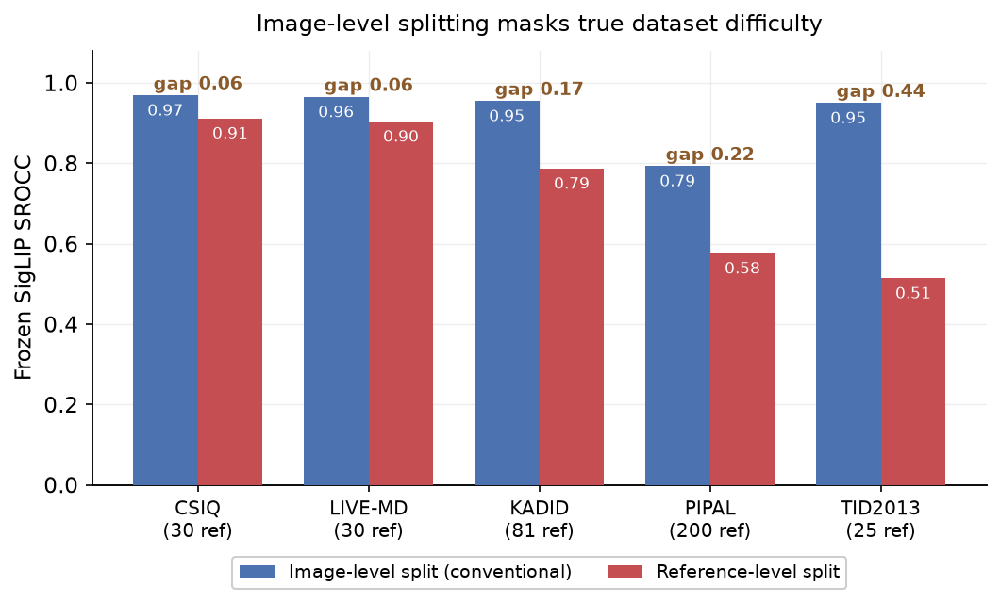
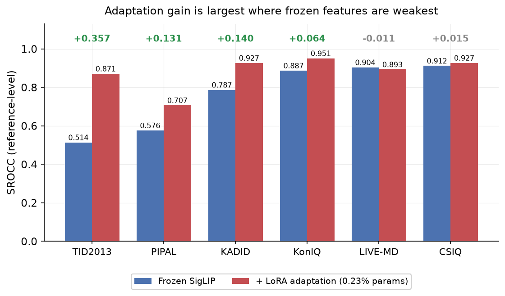

Abstract
Blind image quality assessment (BIQA) increasingly relies on frozen vision-language model (VLM) embeddings, which are efficient but leave open how much accuracy is lost without backbone adaptation and when such adaptation helps. This question is complicated by the common use of image-level splitting on synthetic-distortion benchmarks, where distorted versions of the same reference image appear in both training and test sets; the resulting content overlap inflates the apparent performance of frozen representations and can mislead conclusions about adaptation. This article addresses both issues jointly. First, an efficient BIQA framework is developed that fuses a natural-scene-statistics descriptor with frozen SigLIP and CLIP-H embeddings through a lightweight regression head. Second, its SigLIP stream is adapted with parameter-efficient Low-Rank Adaptation (LoRA), training only 0.23% of the backbone parameters. Finally, the frozen and adapted models are evaluated across six datasets under image-level and reference-level protocols. Image-level splitting is shown to inflate frozen-feature SROCC by up to 0.44 and to mask wide variation in true difficulty that only reference-level evaluation reveals. Under this protocol, adapting the SigLIP stream raises SROCC by up to 0.328 on TID2013 (from 0.514 to 0.842) while updating only 0.23% of parameters, with little benefit where frozen features are already strong. The adaptation is thus a targeted extension of the framework that restores accuracy precisely where the frozen system is weakest.
Key Findings
- Parameter-efficient LoRA adaptation of a frozen SigLIP stream (0.23% of parameters) raises KonIQ-10k SROCC from 0.887 to 0.948 ± 0.004.
- Image-level splitting makes every synthetic dataset look uniformly easy (0.79–0.97); reference-level splitting reveals their true difficulty (0.51–0.91).
- The inflation from content overlap (0.06–0.44) is not explained by the number of reference images (rank correlation ρ = −0.05).
- Across six datasets, adaptation gain tracks frozen-feature weakness: largest where frozen features are weak, negligible where they are already strong.
- Compared against DoRA and AdaLoRA under an identical protocol, vanilla LoRA matches or beats both alternatives while training fewer parameters and in less time.
Image-level splitting masks dataset difficulty

Frozen SigLIP under image-level versus reference-level splitting across five synthetic datasets. Image-level scores are uniformly high; reference-level scores reveal widely varying difficulty. The gap (0.06–0.44) is not explained by reference count (shown in parentheses).
Adaptation helps in proportion to difficulty

Frozen versus LoRA-adapted SigLIP under reference-level evaluation, ordered by frozen strength. Each entry is the mean ± std over multiple reference-level splits, with the epoch selected on a held-out validation partition. The gain (labeled) is largest where frozen features are weakest and negligible where they are already strong.
| Dataset | Frozen | + LoRA | Δ | n |
|---|---|---|---|---|
| TID2013 | 0.514 | 0.842 ± 0.071 | +0.328 | 5 |
| PIPAL | 0.576 | 0.659 ± 0.010 | +0.083 | 2 |
| KADID-10k | 0.787 | 0.921 ± 0.009 | +0.134 | 3 |
| KonIQ-10k | 0.887 | 0.948 ± 0.004 | +0.061 | 3 |
| LIVE-MD | 0.904 | 0.911 ± 0.027 | +0.007 | 5 |
| CSIQ | 0.912 | 0.946 ± 0.013 | +0.034 | 5 |
LoRA vs. DoRA vs. AdaLoRA
On TID2013, under an identical reference-level protocol with validation-based epoch selection, DoRA matches vanilla LoRA within run-to-run variance at roughly four times the training cost, and AdaLoRA underperforms both at a higher trainable-parameter count. Neither alternative improves on vanilla LoRA for this task.
| Method | SROCC | Trainable | Rel. time |
|---|---|---|---|
| LoRA | 0.842 ± 0.071 | 0.232% | 1.0× |
| DoRA | 0.819 ± 0.083 | 0.246% | 4.3× |
| AdaLoRA | 0.782 ± 0.084 | 0.348% | 3.2× |
BibTeX
@article{adam2026peft,
title = {Parameter-Efficient Adaptation of a Multi-Stream Vision-Language
Framework for Blind Image Quality Assessment},
author = {Adam, Bishr Omer and Li, Xu},
journal = {Under review},
year = {2026}
}